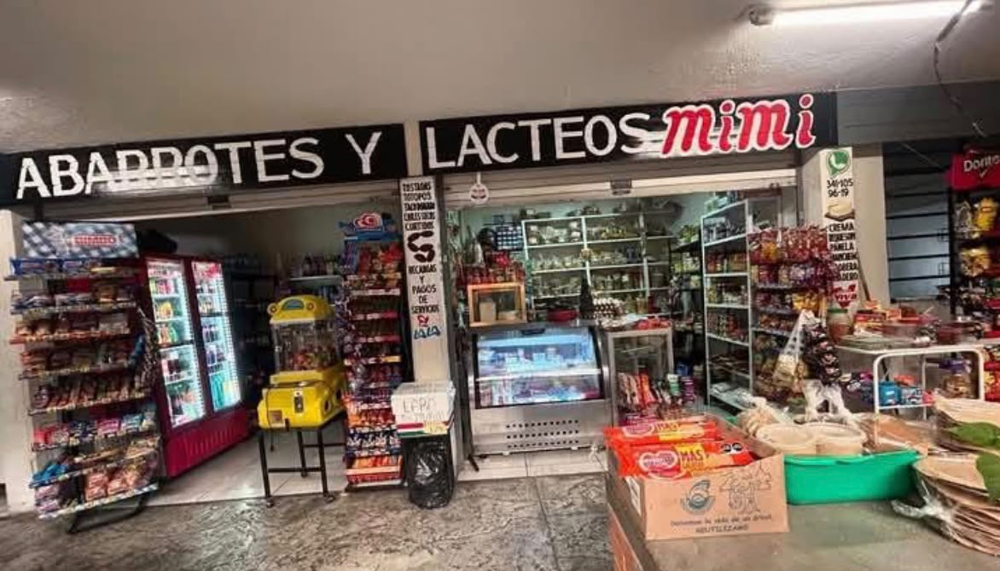
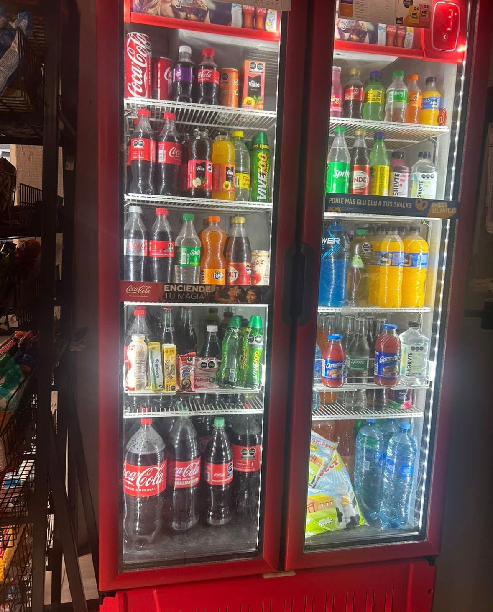

Bienvenidos a Cremería Mimi
En Cremería Mimi encontrarás productos de calidad para tu hogar. Contamos con una variedad de abarrotes, quesos y refrescos para satisfacer las necesidades de nuestros clientes.


Calidad y sabor cerca de ti
En Cremería Mimi encontrarás productos de calidad para tu hogar. Contamos con una variedad de abarrotes, quesos y refrescos para satisfacer las necesidades de nuestros clientes.

